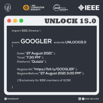

Mixed Reality Being Kenspeckle

We live in a world of technology where there are 16 billion people worldwide who actively use smartphones every day. Technology is changing a lot, the number of mobile users is constantly rising. Mobile phones were not a necessity 20 years ago. But with significant changes and rapid growth, we are experiencing immersive mediums like virtual reality and augmented reality that is informational.
We know how to bring the physical world into digital screens and now are primed to bring digital data and place it in the actual environment using Mixed Reality. They are a combination of AR and VR that is making its way mainstream. In fact, the mixed reality was coined around the 1990s to explore the potential of this technology.
Mixed reality gives us instinctual interactions with the data in the environment and among our things. Even with us not noticing, we have used this technology with our handheld devices. People may not even realize using AR filters in social media are a form of mixed reality. Not just social media, this can be used in healthcare, education, and in manufacturing.
One of the best examples to demonstrate this is Microsoft HoloLens.
In manufacturing, such as aircraft maintenance and design validation, the tasks were accelerated by 80% and complex assembly tasks were increased by 30%. Airbus now uses Hololens to make the job easier using the actual data surrounding the environment and uses the lens to complete the task which increases worker productivity. This also increases equipment efficiency.
In healthcare, the lens can plan individual treatment plans for the patients that can accelerate clinical diagnosis and improve outcomes using mixed reality. Hololens can also be used to explain the procedures done using interactive 3D imagery to allay the concerns.
But how does it work ?
The details that require are very complex that host interaction between handset hardware, mixed reality software, and cloud-based servers. The handset consists of several components that include cameras and sensors to identify and respond to the problem. The hardware module works together to create a 3D hologram that will have the data values known to it before at hand. As we move through physical reality, our data is tracked and used in digital reality.
Imagine being able to virtually label your car keys reminding you where you left off last at home. There’s a lot more you can do with it and hence the future of Mixed Reality is forthcoming. With other technologies disrupting the current way of life, mixed reality will create more jobs. In a few years from now, we will see this mature. That will unlock a world with powerful digital information in the future.
Updates From IEEE Computer Society Kerala Chapter
Webinar Series - FOSS
The webinar series on FOSS (Free and open-source software) held by IEEE Computer Society consisted of two spectacular webinars.
The first session was held on 23rd July 2021 from 6:30 PM on the topic 'Using Free/Libre Software To Enable Business'. The speaker was Mr Abhas Abhinav, the Founder of DeepRoot GNU/Linux and the platform used was BigBlueButton. The total number of participants for the webinar was 50.
The second session was held on 30th July 2021 from 6:30 PM on the topic 'FOSS Based Entrepreneurship'. The speaker was Mr Rushabh Mehta, the Founder of Frappe & ERPNext and the platform used was Google Meet. The total number of participants for the webinar was 55.
Let’s GO Xtreme

The main aim of the event was to increase participation for IEEEXtreme from the Kerala section and help students achieve a better rank for the IEEEXtreme by giving them practice. The total number of teams for Let’s GO Xtreme was 137. Let’s GO Xtreme was held by IEEEXtreme Kerala Section and IEEE Computer Society Kerala Chapter. It was conducted for 4 days in August.
TechThreads

TechThreads is a technical blog writing initiative by IEEE Computer Society Kerala Chapter. For the third quarter of 2021, we brought in the theme 'Automation in Everyday Life' and received numerous innovative blogs. This aimed at enriching the technical knowledge of the participants in the world of creativity and expressing their views through the magic of words. The registration phase came to an end by 30th September 2021 and it fetched a high participation count consisting of both IEEE and Non-IEEE members.
Elever - Capture The Flag

Capture the Flag competition was the 4th task of the Elever series powered by IEEE Computer Society Kerala Chapter in collaboration with RedTeam the Hacker Academy, Kochi. The event was conducted on 28th August 2021. This competition encouraged the participants to learn more about computer security, cryptography, and web technologies.
The winners are:
First prize - Joel John Kandathil (Amal Jyothi College of Engineering)
Second prize - Millen Nina Ittyeipe (College of Engineering Kidangoor)
Third prize - R Sreelekshmi (Mar Baselios College of Engineering and Technology)
The competition received a good amount of participation and it was successfully completed.
REUNITE

Reunite was organized on the 24th of August 2021. This event was held to know and understand future events and to connect with like-minded people. Common goals, visions, and ideas were discussed to bring thoughtful and successful events.
This meetup was conducted by the Women in Computing of IEEE Computer Society Kerala Chapter and all the women in computing coordinators were invited to a google meet. Neha Jijy, Women in Computing Coordinator, IEEE Computer Society, Kerala Chapter led the meeting. Events conducted by the SBCs and future events were proposed. The meeting was scheduled to start at 6:00 PM and was closed by 7:15 PM, thanking all the coordinators for joining the meeting and sharing their valuable time.
INFORMATYKA
Informatyka was a month-long series of events conducted by Women in Computing of IEEE Computer Society Kerala Chapter from 10th September to 10th October 2021. It aimed to bring forth technological awareness in undergraduate students, especially girls. It comprised 12 events conducted in collaboration with 37 IEEE Student Branch Chapters across Kerala. These 12 events, included webinars, competitions, workshops, and more, highlighting different topics in the world of technology.
National Student Tech Talk Series

The 14th session of Padmabhushan FC KOHLI Commemorative National Student Tech Talk Series was an interesting event conducted by the CSI Trivandrum Chapter along with CSI SB Sree Chitra Thirunal College Of Engineering in partnership with Kerala Technological University and IEEE CS Kerala Chapter on 16th September 2021. With over 100 participants, the event fetched much appreciation and participation all across Kerala and the key to this was the wide panel of speakers who brought light to this session. The eminent speakers include:
1. Cerin Sara Santhosh from RIT who spoke on the topic, Mixed Reality
2. Amith Tony Joseph from MEC who spoke about Applications of IoT
3. Fahad Noushad from SCT who spoke on Leverage Machine Learning for Game Development
4. Bharath Srinivasan from MEC who spoke about Flask for Hobbyist
The session emphasized most of the emerging technologies which captured the eyes of the budding engineers all around Kerala. It was a thrilling and exciting session.
Leadership Training & Soft Skills Development Session
IEEE Computer Society Kerala Chapter in collaboration with Women in Computing conducted the talk session on “Leadership Training and Soft Skills Development”. The resource person was Ms Susan Kathy Land, IEEE President and CEO 2021. The event was conducted on 24th September 2021 virtually via the Cisco Webex platform. The speaker delivered good insights on how leadership and soft skills will influence us to become good professionals. A total of 20 participants became part of the talk session. The event was very interesting and received good feedback from a whole lot of participants.
Kickstarter with Docker

Kickstarter with Docker was a two-day hands-on workshop conducted by the IEEE Computer Society Kerala Chapter on the 27th and 28th of September, 2021 from 7:00 PM. The session was taken by Mr Ashutosh S. Bhakare, the director of Unnati Development and Training Centre Pvt Ltd. The participants were able to learn about Docker and how to set foot in the world of app development.
Achievements
IEEE CS Richard E. Merwin Scholar, Fall 2021
The IEEE Computer Society, Kerala Chapter is spearheaded by a group of eminent leaders and we have one more feather added to the cap. The most notable, IEEE CS Richard E. Merwin Scholarship Awards were awarded to two of our members for spring 2021. Ann Rose Cherian was one of the students who received the scholarship. She was the Kochi Hub Coordinator for IEEE Computer Society, Kerala Chapter during the year 2020. Bhadra Jayakumar is currently serving as the Student Representative for the IEEE Computer Society, Kerala Section.
These selected winners will serve as the IEEE Computer Society Student Ambassadors and also receive $1000 for their achievement.
Student Branch Chapter Activities
MockXtreme Contest- XCEL #1 - GCE KANNUR

IEEE Computer Society SBC GCEK conducted the first event of the MockXtreme contests, XCEL #1 on 19th September 2021 at 6:00 pm, under the banner of UNLOCK 15.0. The event was conducted in the HackerRank platform exclusively for the IEEE members of GCEK. The participants were to register with the same team as IEEE Xtreme. The contest consisted of 6 questions which were from different levels Easy, Medium, and Hard. The duration of the contest was 3 hours. Out of 69 registrations, Abhiram Rajeevan of S4 CSE bagged first place. Arshad Danish and Muhammed Shameem of S4 CSE secured second place. The event got great responses and helped all the participants to prepare for IEEEXtreme.
Introduction to C Programming-RIT
IEEE Computer Society SBC RIT organized the second edition of P2P starting from 27th August 2021. This episode focused on students that struggle to start programming or coding and bring them to the same page as their coding peers using the C programming language. The event was initiated by Vyshnav C J of S2 CSE with the familiarization of the coding environment, basic data types, and input/output for two days. The session was then handed to Govind V R of S2 CSE for two days, who handled loops, control statements, and operators. Nikhil Krishnan of S2 CSE introduced functions and binary concepts. The next day array concepts, search, and sort were taught by Jerusha George of S2 CSE. Nikhil Krishnan later resumed the session with 2-D, character arrays, and strings. The episode came to an end on September 5, 2021, with the concept of pointers taught by Vyshnav C J.
Upcoming Events
AKCSSC 2021
All Kerala Computer Society Student Convention is the flagship event of the IEEE Computer Society Kerala Chapter held enthusiastically every year. AKCSSC is back with a bang this time with the theme ‘Digital transformations & Entrepreneurship’. Skills and experiences related to digital transformation and entrepreneurship are significant to the budding entrepreneurs and student community alike.
Numerous events are lined up to be conducted in a hybrid manner during AKCSSC 2021. So mark your calendars for the last week of November and do not miss out on the greatest event of the year.